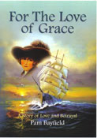

For the Love of Grace

Book ReviewsIn her latest book, Pam Bayfield has created a memorable figure in Grace Pemberton. A woman of warmth and passion, Grace has love to give all those whose lives link in with hers. These include her husband, Charles, whom she has known since her teens, and her lover, Ralph Cooper, who is a senior partner in Charles’ firm. Grace is a resourceful woman who is able to cope with the trials and tribulations of a dangerous voyage from England; the difficulties of establishing herself in Sydney Town and finally the opening and running of a café in Manly. Pam Bayfield skilfully tells the story of this loving and courageous woman in the various stages of her life and at the same time takes the reader back to the early years in the colony from 1850 to 1890with her careful reconstruction of Historical detail. A really good read. By Peggy Sacco How true the idiom – one picture is worth 1,000 words. The cover on this novel is in itself a lovely work of art. It draws the reader with such power one wants to know who the characters in the story are – where are they from – where are they going – and what will happen in their lives? And so the story begins. The seaworthy clipper Catherine Adamson makes ready to depart from England. The year is 1857 and there are no convicts on this journey, only paying customers. Among them – beautiful Grace Pemberton, her ambitious husband Charles, and their small children, Amy aged 5 and Joshua aged 3. Charles has a position waiting for him with a law firm in Sydney. He had promised his wife they would return home to England after a year, providing she agreed to make the perilous sea voyage with him, should she find she is homesick and unable to settle in Australia. And so begins a fascinating story of love and betrayal after Grace finds herself with a dilemma of concealing her passionate love affair from her husband and the ensuing consequences of their betrayal. Accolades are to be given to the author for her expertise in researching the real historical facts woven so cleverly into this entertaining novel. By Doreen Bolton In her new novel, "For the Love of Grace", Pam Bayfield provides us with a lively picture of a brash young colony emerging from its materialistic chrysalis. Grace and Charles Pemberton arrive on the "Catherine Adamson" sailing ship in 1857, only to be shipwrecked at Sydney Heads. Further trials await them as they settle in the streets and lanes of the Rocks, until they find serenity in the carefree village of Manly. Readers will be grateful to the author for her research into the historical records of Manly and the Northern Beaches. She brings the beauty and story of these areas to life for us. By Janet West This is a very charming and easy to read book. It is a page turner with the reader really caring what happens to the carefully painted characters. There is sufficient drama and tension to hold the reader and also to create expectation and surprise. This is a real skill for the writer, to create this from the very beginning when Grace arrives in Sydney in 1857 - surviving shipwrecks others did not, and observing the remains of vessels where the occupants were not so fortunate. The journey had been terrifying and seasickness her daily companion. The building tension of family, love, temptation, two families intertwined in such a skilled manner that we don't know what is going to happen - but each page keeps us guessing and wondering. The early history of the developing suburb of Manly is well researched and of interest not only to local readers but to those who visit or want to take that ferry - remembering the original fifties slogan about Manly: Seven Miles from Sydney, a thousand miles from care. Historical interest is brief but always to the point, with the inclusion of photographs of the period - all adding to the value of this otherwise fictional account. It's the sort of tale one wishes would never end and rumour has it that the successful author is considering a sequel - I, for one, cannot wait! What will happen to the next generation and the aging families we have grown to love, admire or disdain and dislike. Contrast was built in such a way that the reader just could not put the book down. Renee Goossens Dear Pam, Sorry to have missed your book launch but it appears that it was very successful. Have finished the book and enjoyed it very much. It was a good story that held my attention and your research of the era was thorough. For your first non-fiction novel I say well done Pam and congratulations – you should feel inspired to attempt another novel which I’m sure could easily be met with the same critical acclaim as this. Look forward to seeing you soon. Congratulations dear Pam, I have read your book that I found not only a 'rollicking read' but it being intertwined with early Sydney history and particular Manly and Newport, it was highly informative. For the Love of Grace held my interest and with twist and turns in the story I found it impossible to guess what was going to happen next. I was there in the 1850's with you, the storytelling is clever. I thoroughly enjoyed the story. My best wishes to you and a sincere recommendation that others should read your ninth book. Well done! Valerie Barrow Hi Pam Just finished reading your latest book and have to compliment you on a great story backed with interesting research about the Manly and Newport area. This is an excellent read for anyone living on the Northern Beaches. Grace’s story truly makes our history come to life. Congratulations! Love your friend Sue Dear Pam, Don't know if I mentioned to you about how much I enjoyed "For The Love of Grace" - full of admiration of the research you did for the book. Loaned it to a friend who said she couldn't put it down and enjoyed it immensely. Cheers |
|